前段时间面了荔枝，反馈说对一些css概念性的东西掌握不是很好~ 所以最近有空看了张鑫旭大佬的《CSS世界》
全本通熟易懂，继承了博客的画风，入口即化
很多东西三言两语讲不清楚，大家可以入手张鑫旭大佬的书来看看，里面很多常用的概念和属性都帮我们捋一遍。《css世界》购买链接
附上张鑫旭大佬的博客，有事没事看一看经常会有意外收获张鑫旭博客
改变 width/height 作用细节的 box-sizing
box-sizing的作用是什么？ 一句话，改变了 width 作用的盒子。默认情况下，width 是作用在 content box 上的，box-sizing 的作用就是可以把 width 作用的盒子变成其他几个。
但是目前 box-sizing 仅支持 content-box 和 border-box。1
2
3
4
5
6
7
8
9
10
11
12
13
14
15
16
17
18/* 这里 box1宽度默认作用在content-box,所以 width 表现为 100 + 10*2 + 20*2 = 160px */
.box1 {
width: 100px;
height: 100px;
border: 10px;
padding: 20px;
background-color: red;
}
/* 这里 box2添加了 box-sizing: border-box; 所以宽度作用改成了content、padding与border，width 表现为100px, content为: 100- 10* 2- 20* 2 = 40px*/
.box2 {
width: 100px;
height: 100px;
border: 10px;
padding: 20px;
background-color: red;
box-sizing: border-box;
}
min-width/max-width min-height/max-height 权重超越 !important, min-width超越max-width
min-*初始值规范里为 0，实际尝试为auto
max-*初始值为 auto1
2
3
4
5
6
7
8/*
下面代码表现为 100px
*/
.box1 {
min-width: 100px
max-width: 10px;
width: 50px;
}
padding的百分比值计算规则是相对于宽度计算的
这里引出一道面试题， 不借助js的情况下用一个元素实现相对于浏览器窗口宽度1/2的正方形
当时我的回答是用vw，如果早点看css世界就知道padding这个属性了。1
2
3
4
5
6
7
8
9
10/* vw方法 */
.box1 {
width: 50vw;
height: 50vw;
}
/* padding方法 */
.box2 {
padding: 25%;
display: inline-block;
}
padding 的图形绘制 一个元素画出红领巾的“三道杠”
1 | .box1 { |
1 | <div class="box1"></div> |
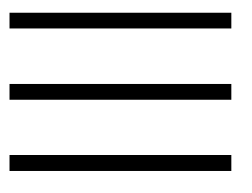
padding 的图形绘制 一个元素画出双层圆点图形效果
1 | .box1 { |
1 | <div class="box1"></div> |
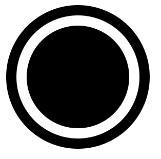
margin的百分比值计算规则和padding一样，但是margin在垂直方向没办法改变自身内部尺寸往往要借助父元素作为载体，还存在margin合并的问题
还是那道浏览器窗口1/2的面试题，如果没有要求只用一个元素实现的话，可以用margin去实现
这里简单说一下，之所以设置父级box1的overflow:hidden，是因为要创建一个块级格式化上下文元素,一方面可以用子级margin撑起高度，另一方面处理margin合并问题，所以子级.box2直接用margin:100%，而不是200%。1
2
3
4
5
6
7
8
9
10.box1 {
background: currentColor;
overflow: hidden;
/* 宽度窗口1/2 */
width: 50%;
}
.box2 {
/* 高度窗口1/2 */
margin: 100%;
}
1 | <div class="box1"><div class="box2"></div></div> |
margin合并的解决方法
这里只列举出margin-top合并的情况, margin-bottom与其相对应
- 父元素设为块级格式化上下文，7就是
- 父元素设置border-top
- 父元素设置padding-top (这里可以用margin-top负值来消除作用)
- 父元素与第一个子元素之间添加内联元素进行分隔
利用 margin: auto 做垂直上下居中
1 | .box1 { |
1 | <div class="box1"><div class="box2"></div></div> |
border 默认颜色为元素color值
border绘制三角形
项目上画三角形绝大部分都是用border，好控制，实现简单，成本低只需一个元素。1
2
3
4
5
6.box1 {
border: 10px;
border-style: solid;
border-color: currentColor transparent transparent;
width: 0;
}
css尺寸单位ex，指的是字母x的高度。
这里简单说一下，css里面的基线(baseline)其实就是字母x的下边缘线
关于ex的应用这里不写呆毛了，我们可以利用他来实现文字与图片居中，直接给张鑫旭大佬的demo
再感慨一下，虽然这些东西多多少少都在张鑫旭博客看到，但是这本书真的对一些东西的讲解很通俗易懂。大家可以入手有空翻一翻
BFC 块级格式化上下文
在上面我们讲过了设置overflow:hidden;可以创建BFC来清除浮动，那么还有哪些方法可以创建BFC呢？
- 根目录
- float 值不为 node
- overflow 的值为 auto、scroll或hidden(常用)
- display 值为 table-cell、 table-caption和 inline-block(常用)
- position 的值不为 relative和 static
BFC的结界特性最重要的用途不是去margin重叠或清除float影响，而是实现更健壮、更智能的自适应布局
面试的时候面试官问我BFC主要用来做什么，我的回答是 清除浮动和去margin重叠。真的是哪壶不开提哪壶…哭死😭
用BFC实现一边固定宽度，另一边自适应布局
1 | <style> |
无依赖absolute绝对定位（没有left/top/right/bottom)
我们平时如果对元素进行 absolute 定位，多半会加多个 left,top然后给父级加个 relative。
实际上大多数情况我们可以直接用margin辅助定位，1
2
3
4
5.father{ position: relative; }
/* @before */
.son {position: absolute; top: 10px; left: 10px;}
/* @after */
.son {position: absolute; margin-top: 10px; margin-left: 10px;}
这么实现有两个好处，一个是我们不需要父级去加个relative后面要撤销，直接改 .son样式就好。
第二个好处就是某些场景适应性比依赖项定位好
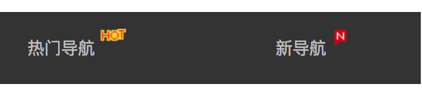
无依赖在有多语言场景下做角标简直是天使！！！不然一个英语场景，一个日语场景网站肯定会乱套….
单行显示…更多效果
1 | <style> |
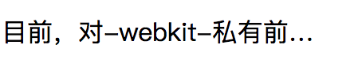
多行显示…更多效果
这里用了Overflow是因为，不用的话，会把多余的内容展示出来，但是用不用都会有省略号效果1
2
3
4
5
6
7
8
9
10
11
12<style>
.p1 {
display: -webkit-box;
-webkit-box-orient: vertical;
-webkit-line-clamp: 2;
width: 500px;
overflow: hidden;
}
</style>
<p class="p1">
目前，对-webkit-私有前缀支持良好的浏览器还可以实现多行文字打点效果，但是却无 须依赖 overflow:hidden。比方说，最多显示 2 行内容，再多就打点就
</p>
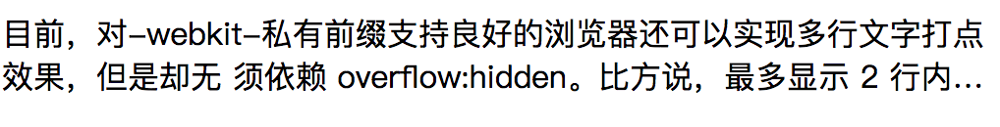
outline自动填满屏幕剩余空间的应用技巧
tip:clip是裁剪功能，很多情况下我们都用他来实现一些隐藏的效果，比如这个栗子🌰..1
2
3
4
5
6
7
8
9
10
11
12
13
14
15
16<style>
.footer {
height: 50px;
}
.footer >p {
position: absolute;
left: 0;right: 0;
background-color: #abcdef;
outline: 9999px solid #abcdef;
clip: rect(0 9999px 9999px 0);
}
</style>
<h1>I am Jsonz.</h1>
<div class="footer">
<p>footer</p>
</div>
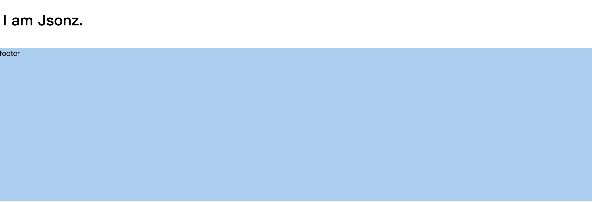
层叠上下文
什么是层叠上下文？
层叠上下文，英文称作 stacking context，是 HTML 中的一个三维的概念。如果一个元素含 有层叠上下文，我们可以理解为这个元素在 z 轴上就“高人一等”。
层叠上下文生成规则:
- position 值为 relative/absolute
- flex 布局
- opacity 值不是 1
- transform 值不是 none
- filter 值不是 none
- -webkit-overflow-scrolling 设为 touch
层叠上下文的顺序:
- 如果不依赖z-index，则可以看成 z-index: 0
- 依赖z-index 则看 z-index 的值
textarea 宽度100%自适应效果
1 | <style> |
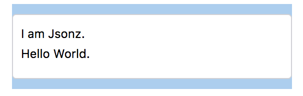
空元素选择器 :empty
看《css世界》之后才知道有这么一个空元素选择器…绝对不是其他目的1
2
3
4
5
6
7<style>
span:empty::after {
content: '是帅哥';
}
</style>
<span>Jsonz</span>
<span></span>
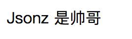
第一行要选择器:first-line
同上，比较少用的选择器，但是感觉部分场景挺实用的1
2
3
4
5<style>
p:first-line { color: red; }
p { width: 40px; }
</style>
<p> 可乐鸡翅 </p>
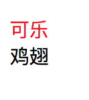
第一个字（母）选择器:first-letter
需要注意的是，如果这里我用的是字（母）来描述选择器，意味着，如果第一个是符号的话，会找下一个直到找到符合条件的才会渲染成我们要的样式，否则都是默认样式。1
2
3
4
5
6
7<style>
p:first-letter { color: red; }
</style>
<p>
!!!!反沙芋
</p>
<p>!!!!!</p>
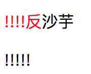
动态loading打点效果
这里主要利用了content 支持\A换行来实现，用dot是因为
是自定义的一个标签元素，除了简约、语义化明显
2
3
4
5
6
7
8
9
10
11
12
13
14
15
16
17
18
19
20
21
dot {
display: inline-block;
height: 1em;
line-height: 1;
text-align: left;
vertical-align: -.25em;
overflow: hidden;
}
dot::before {
display: block;
content: '...\A..\A.';
white-space: pre-wrap;
animation: dot 3s infinite step-start both;
}
@keyframes dot {
33% { transform: translateY(-2em); }
66% { transform: translateY(-1em); }
}
</style>
正在加载中<dot>...</dot>
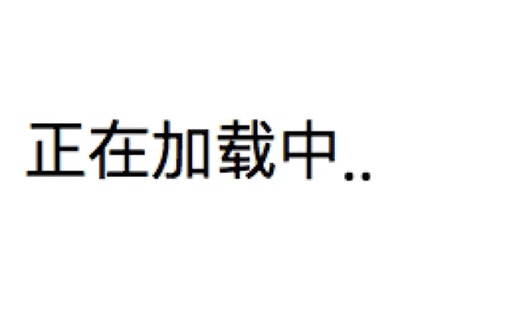
单行文字居中对齐，多行文字左对齐
1 | <style> |
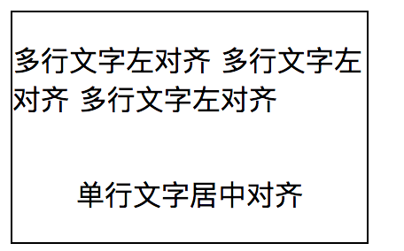
字体使用系统字体
这里个人有点疑惑~ 如果单纯是想使用系统默认字体，直接不设置 font 不就好了~ 多此一举设置个 menu…1
2html { font: menu; }
body { font-size: 16px; }
书里更多的不是给我们展示这些小技巧，而是帮我们讲清楚很多概念与他的特性，这篇文比较没经验，效果图都是用的截图…下次有机会的话注意直接展示个demo可能看起来会更直观